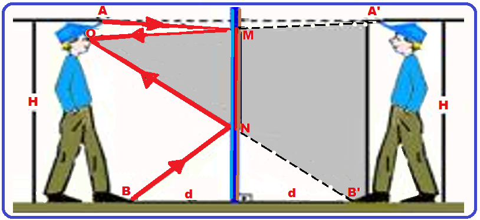
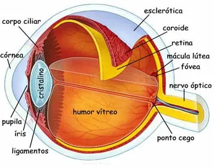

Agora que entendemos como a luz entra n olho, vammos focar emm como ela **fora a imagem** na reina e commo o cérebro usa essas informmações no nosso diaa a dia para que possamos navegar pelo mundo!
--- ## 1. Como a Imagem é Formada A luz é uma forma de radiação eletromagnética visível composta por partículas de energia chamadas fótons, que se propagam em linha reta em altíssima velocidade. Nós enxergamos o mundo porque a luz emitida por uma fonte (como o Sol ou uma lâmpada) atinge os objetos e reflete em direção aos nossos olhos. A formação da imagem acontece através desse trajeto da luz. Ao entrar no olho pela pupila, os raios de luz atravessam a córnea e o cristalino, que funcionam como lentes alinhando e focando esses raios no fundo do olho, sobre a retina. Devido ao cruzamento dos raios ao passar pela lente, a imagem é projetada na retina de cabeça para baixo. Em seguida, células sensíveis à luz convertem essa informação visual em impulsos elétricos, que são enviados pelo nervo óptico até o cérebro, onde a imagem é corrigida para a posição certa e finalmente interpretada. --- ## 2. A Mágica da Acomodação Visual A acomodação visual nada mais é do que o "foco automático" do nosso olho, permitindo que a gente enxergue com nitidez tanto a tela do celular perto do rosto quanto um prédio longe na rua. Tudo acontece graças ao cristalino, a lente natural do olho, que muda de formato com a ajuda dos músculos ciliares: Para olhar de perto: Os músculos se contraem e o cristalino fica mais arredondado ("gordinho"), dobrando mais a luz para focar o objeto próximo. Para olhar de longe: Os músculos relaxam e o cristalino fica mais fino e plano, permitindo focalizar objetos distantes. --- ## 3. Do impulso Elétrico ao prcessamento Cerebral A acomodação visual nada mais é do que o "foco automático" do nosso olho, permitindo que a gente enxergue com nitidez tanto a tela do celular perto do rosto quanto um prédio longe na rua. Tudo acontece graças ao cristalino, a lente natural do olho, que muda de formato com a ajuda dos músculos ciliares: Para olhar de perto: Os músculos se contraem e o cristalino fica mais arredondado ("gordinho"), dobrando mais a luz para focar o objeto próximo. Para olhar de longe: Os músculos relaxam e o cristalino fica mais fino e plano, permitindo focalizar objetos distantes. --- ## 4. Uso Prático: Como Usamos a Imagem Formada? A imagem processada pelo cérebro deixa de ser apenas informação visual e passa a ser o motor das nossas ações diárias. Usamos a imagem formada em quatro grandes frentes práticas: Orientação e Navegação Espacial: O cérebro combina as imagens dos dois olhos para calcular profundidade, distância e tridimensionalidade (estereopsia). Isso nos permite andar sem esbarrar em objetos, desviar de obstáculos e calcular o tempo ao atravessar uma rua. Leitura e Interpretação de Símbolos: Convertemos formas geométricas e traços em linguagem. Quando você olha para letras, placas de trânsito ou ícones no celular, o cérebro reconhece o padrão da imagem e o traduz instantaneamente em significado. Reconhecimento Facial e Comunicação Social: Uma região especializada do cérebro (a área fusiforme de faces) analisa a imagem de um rosto para identificar quem é a pessoa, interpretar suas expressões emocionais (alegria, medo, raiva) e guiar nossas interações sociais. Coordenação Visuomotora (Motor Control): A imagem guia as mãos e o corpo em tempo real. Seja para pegar um copo d'água, digitar no teclado, praticar esportes ou desenhar, o cérebro ajusta os movimentos dos músculos com base no feedback visual constante.

